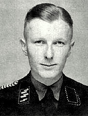

<
Rise To Power
Discharged from the hospital amid the social chaos that followed Germany’s defeat, Hitler took up political work in Munich in May–June 1919. As an army political agent, he joined the small German Workers’ Party in Munich (September 1919). In 1920 he was put in charge of the party’s propaganda and left the army to devote himself to improving his position within the party, which in that year was renamed the National-sozialistische Deutsche Arbeiterpartei (Nazi). Conditions were ripe for the development of such a party. Resentment at the loss of the war and the severity of the peace terms added to the economic woes and brought widespread discontent. This was especially sharp in Bavaria, due to its traditional separatism and the region’s popular dislike of the republican government in Berlin. In March 1920 a coup d’état by a few army officers attempted in vain to establish a right-wing government. READ MORE

Oradour-sur-Glane Massacre
On 10 June, Diekmann's battalion sealed off Oradour-sur-Glane and ordered everyone within to assemble in the village square to have their identity papers examined. This included six non-residents who happened to be bicycling through the town when the SS unit arrived. The women and children were locked in the church, and the village was looted. The men were led to six barns and sheds, where machine guns were already in place. According to a survivor's account, the SS men then began shooting, aiming for their legs. When victims were unable to move, the SS men covered them with fuel and set the barns on fire. Only six men managed to escape. One of them was later seen walking down a road and was shot dead. In all, 190 Frenchmen died. The SS men next proceeded to the church and placed an incendiary device beside it. When it was ignited, women and children tried to escape through the doors and windows, READ MORE
Auschwitz II-Birkenau
The victories of Operation Barbarossa in the summer and fall of 1941 against Hitler's new enemy, the Soviet Union, led to dramatic changes in Nazi anti-Jewish ideology and the profile of prisoners brought to Auschwitz. Construction on Auschwitz II-Birkenau began in October 1941 to ease congestion at the main camp. Reichsführer-SS Heinrich Himmler, head of the Schutzstaffel (SS), intended the camp to house 50,000 prisoners of war, who would be interned as forced laborers. Plans called for the expansion of the camp first to house 150,000 and eventually as many as 200,000 inmates. An initial contingent of 10,000 Soviet prisoners of war arrived at Auschwitz I in October 1941, but by March 1942 only 945 were still alive, and these were transferred to Birkenau, where most of them died from disease or starvation by May. By this time the Nazis had decided to annihilate the Jewish people, so Birkenau was changed to a labor camp–extermination camp. The Auschwitz-Birkenau Memorial and Museum estimates that 1.3 million people, 1.1 million of them Jewish, were sent to the camp during its existence.READ MORE
Command and Control
Camp guards were members of the SS-Totenkopfverbände (Death's Head Units). Around 7,000 SS personnel in total were posted to Auschwitz during the war. Of these, 4 percent of SS personnel were officers and 26 percent were non-commissioned officers, while the remainder were rank-and-file members. Approximately three in four SS personnel worked in security. Others worked in the medical or political departments, in the camp headquarters, or in the economic administration, which was responsible for the property of dead prisoners. SS personnel at the camp included 200 women, who worked as guards, nurses, or messengers. The overall command authority for the entire camp was Department D (the Concentration Camps Inspectorate) of the SS-Wirtschafts-Verwaltungshauptamt (SS Economics Main Office; SS-WVHA)..READ MORE

Selection and extermination process
On 31 July 1941, Hermann Göring gave written authorization to Heydrich, Chief of the Reich Main Security Office (RSHA), to prepare and submit a plan for Die Endlösung der Judenfrage (the Final Solution of the Jewish question) in territories under German control and to coordinate the participation of all involved government organizations. The resulting Generalplan Ost (General Plan for the East) called for deporting the population of occupied Eastern Europe and the Soviet Union to Siberia, for use as slave labor or to be murdered. In addition to eliminating Jews, the Nazis also planned to reduce the population of the conquered territories by 30 million people through starvation in an action called the Hunger Plan. Food supplies would be diverted to the German army and German civilians. Cities would be razed and the land allowed to return to forest or resettled by German colonists.READ MORE
Nazi Human experimentation
German doctors performed a wide variety of experiments on prisoners at Auschwitz. SS doctors tested the efficacy of X-rays as a sterilization device by administering large doses to female prisoners. Prof Dr Carl Clauberg injected chemicals into women's uteruses in an effort to glue them shut. Bayer, then a subsidiary of IG Farben, bought prisoners to use as research subjects for testing new drugs. Prisoners were also deliberately infected with spotted fever for vaccination research and exposed to toxic substances to study the effects.READ MORE

Death toll
The exact number of victims at Auschwitz is difficult to fix with certainty, because many prisoners were never registered and much evidence was destroyed by the SS in the final days of the war. As early as 1942, Himmler visited the camp and ordered that "all mass graves were to be opened and the corpses burned. In addition the ashes were to be disposed of in such a way that it would be impossible at some future time to calculate the number of corpses burned."READ MORE

Life in the camps
The prisoners' day began at 4:30 am (an hour later in winter) with morning roll call. Dr. Miklós Nyiszli describes roll call as beginning 3:00 am and lasting four hours. The weather was cold in Auschwitz at that time of day, even in summer. The prisoners were ordered to line up outdoors in rows of five and had to stay there until 07:00, when the SS officers arrived. Meanwhile, the guards would force the prisoners to squat for an hour with their hands above their heads or levy punishments such as beatings or detention for infractions such as having a missing button or an improperly cleaned food bowl. The inmates were counted and re-counted.READ MORE

Individual escape attempts
At least 802 prisoners attempted to escape from the Auschwitz camps, mostly Polish or Soviet prisoners fleeing from work sites outside the camp. 144 were successful. The fates of 331 of the escapees are unknown. A common punishment for escape attempts was death by starvation; the families of successful escapees were sometimes arrested and interned in Auschwitz and prominently displayed to deter others. If someone did manage to escape, the SS picked ten people at random from the prisoner's block and starved them to death.READ MORE

Sonderkommando revolt
The Sonderkommando units were aware that as witnesses to the killings, they themselves would eventually be killed to hide Nazi crimes. Though they knew that it would mean their deaths, the Sonderkommandos of Birkenau Kommando III staged an uprising on 7 October 1944, following an announcement that some of them would be selected to be "transferred to another camp"—a common Nazi ruse for the murder of prisoners. The Sonderkommandos attacked the SS guards with stones, axes, and makeshift hand grenades, which they also used to damage Crematorium IV and set it afire.READ MORE